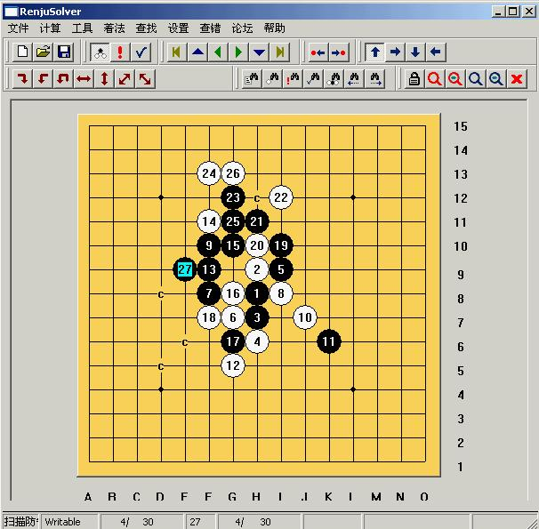
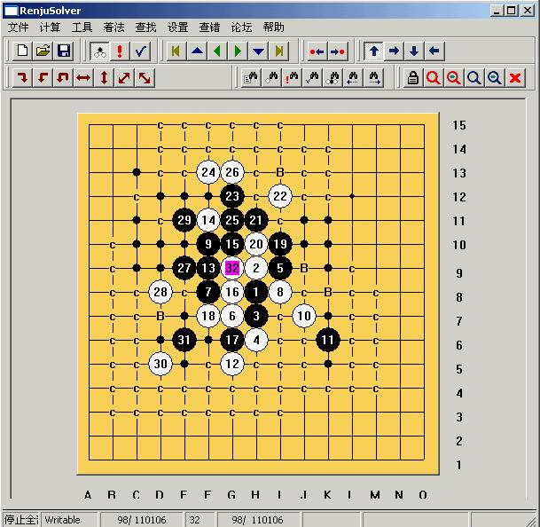
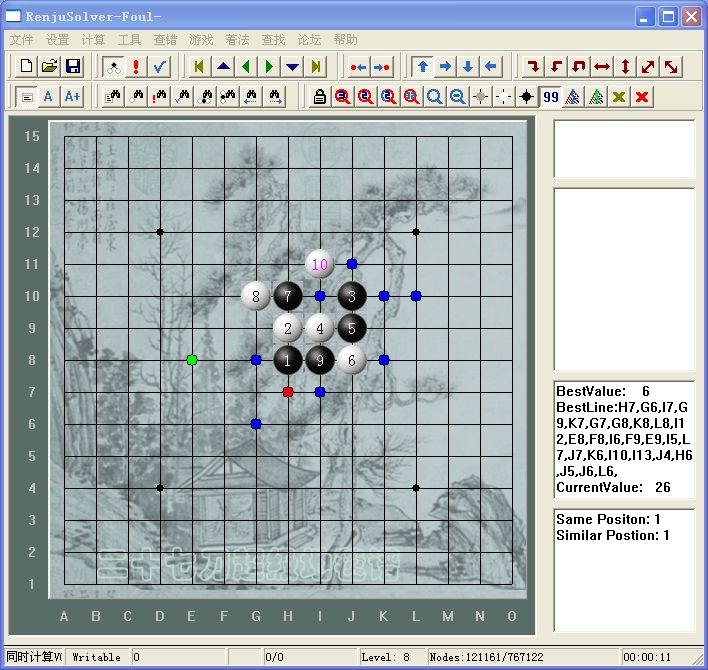

连珠终结者的BUG
#1 连珠终结者的BUG 作者：兔子哥哥 发表时间：2008-10-1 4:09:52
，前天发现的，23活3的时候终结者给出是必胜了，按着走到29，必胜就没了，终结者没算30在D5冲四给黑造长连的点，不知道为什么？#2 Re:连珠终结者的BUG 作者：掌棋宣传员 发表时间：2008-10-1 17:01:06
设置有问题,类似的长连以前我也常见.把设置调试好了就都好了#3 Re:连珠终结者的BUG 作者：游戏人间 发表时间：2008-10-2 10:50:16
这个设置不好的。。他发的图是2006破解版的。#4 Re:连珠终结者的BUG 作者：lfc 发表时间：2008-10-2 22:07:39
什么设置做好呢？？哪位高手说下！#5 Re:连珠终结者的BUG 作者：gerbo 发表时间：2008-10-3 8:18:19
 兔子哥哥，我前些天也弄这个。这个18手次强，走12，4的最强，这个局面我还有待解决。
兔子哥哥，我前些天也弄这个。这个18手次强，走12，4的最强，这个局面我还有待解决。
上图的27走1 5眠三是正解。
#6 Re:连珠终结者的BUG 作者：walker 发表时间：2008-10-30 4:48:41
回楼上几位，长连是06版的典型的bug! 可惜06版已经被淘汰了。以前经常看见挂被抓长连的。
不要迷信软件！尽信软不如无软！尤其是破解版。谁知道破解版是不是功能不全呢！
#7 Re:连珠终结者的BUG 作者：游戏人间 发表时间：2008-11-6 9:25:10
而且真强。。破解的也发到小4的论坛来了。。李鬼碰李逵#8 Re:连珠终结者的BUG 作者：二十七刀 发表时间：2008-11-22 23:57:58
小4最新终结者版本是这样的
